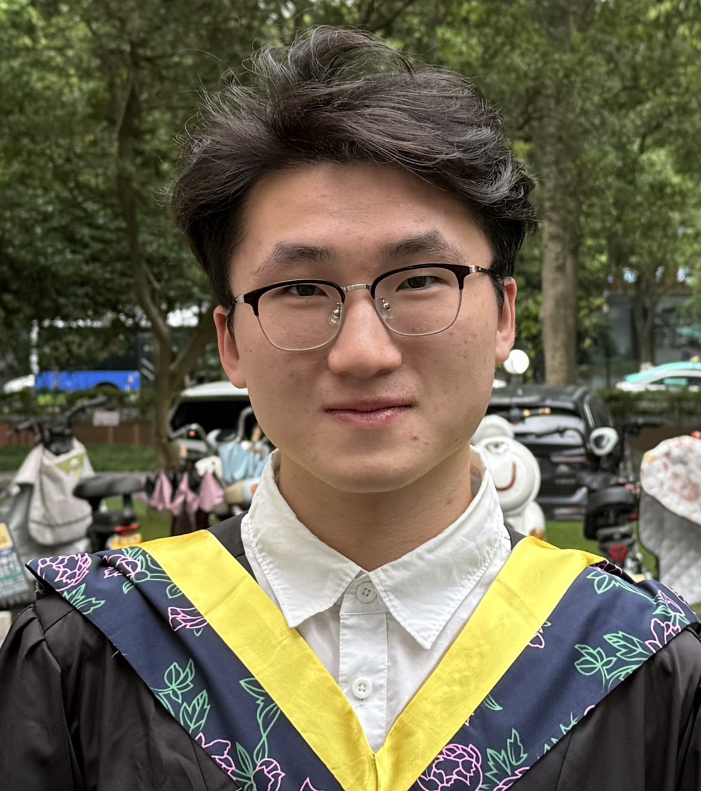

|
 |
Zhaotan LinElectronic Science and Technology |
I am Zhaotan Lin. I will join the Department of Computer Science and Engineering at The Chinese University of Hong Kong (CUHK) as a Ph.D. student in 2026, under the supervision of Prof. Bei Yu. Prior to that, I received my Bachelor's degree in Electronic Science and Technology from Zhejiang University in 2025.
My research interests include:
Electronic Design Automation
Computer Architecture
Feel free to contact me at lzt_tzl@outlook.com if you'd like to chat!
Ziming Ye, Lihang Liu, Zhaotan Lin, Longbiao Liu, Zonghao Liu, H. Y. Fu, “Single-Source optical integrated sensing and communication (O-ISAC) with sequential target recognition”, Optics and Laser Technology, vol. 198, 114961, 2026.
B.Eng. in Electronic Science and Technology, Sep. 2021 – Jun. 2025
Shannon Excellence Class
Zhejiang University / Zhejiang Qizhen Medical & Health Technology Co., Ltd., Hangzhou, China
Research Assistant, Mar. 2023 – Jun. 2024
ChatEDA Technology Co., Ltd, Shenzhen, China
Research Intern, Nov. 2025 – Now
Topic: LLM for EDA
Outstanding Graduate, Zhejiang University / Department of Education of Zhejiang Province, 2025
Yuelun Rising Star Scholarship
Zhejiang Provincial Government Scholarship
First-Class Scholarship of Zhejiang University
First Prize, 8th National Biomedical Engineering Innovation Design Competition